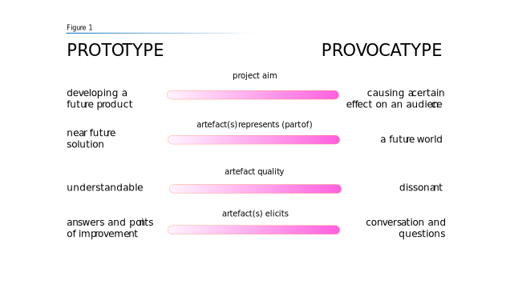
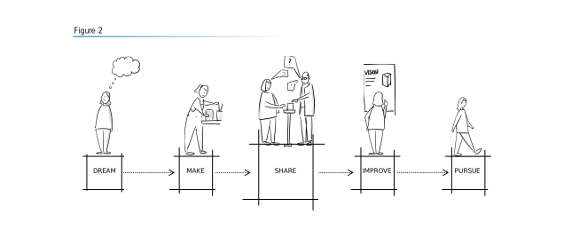

Why, what and how?
Prototyping is an essential activity for designers. With a prototype you bring an idea to life: you communicate it to stakeholders and develop it into a meaningful solution that meets the requirements and wishes of those stakeholders. While prototypes are a means of communicating solutions to current, often small-scale problems, provocatypes (Bowles, 2018) depict possible solutions to larger (future) societal challenges.
Provocatypes encourage dialogue and reflection. They act as a basis for a conversation between different groups of people about what a bright future is for people and planet. Some argue that good design already achieves this critical reflection (Tonkinwise, 2015), the questions is whether this is also the case in practice (or is the majority of design not “good design”...?). For now, creating a provocatype requires a specific approach that differs from making a prototype: whether a provocatype should be a standard part of a design process or whether it should be a project in and of itself remains an interesting discussion.
Why Provocatypes
By making provocatypes, designers are challenged to think about the possible systemic consequences their discipline has. They discover their agency in shaping the future and reflect on their own role and responsibilities. Moreover, their vision of the role of (digital) design in a future society is inspiring and instructive for people who are not involved with e.g. emerging technologies on a daily basis. This initiates a social dialogue about what a “good” future entails for different people and puts the (im-)possibilities of digital technologies in context. Starting a conversation with a diverse group of people based on provocatypes, designers discover different lenses to look at the future and develop ethical sensitivity and an empathetic attitude.
A question that arises is how provocatypes differ from e.g. design fiction (Bleecker, 2009), speculative design (Dunne & Raby, 2013), adversarial design (Disalvo, 2015) etc. It probably does not differ much (or at all), however a literature review, comparison and up-to-date overview-map on the different forms of this type of design is definitely something for future research but not addressed in depth here. The reason for conducting this project is to give digital design students a research-through-design approach (as described by Blythe, 2014) on how to design artefacts that help them explore a bright(er) future. This process guides designers and design-students not only in how to make a provocatype, but also in designing the encounter between artefact(s) and diverse public, facilitating a dialogue with this public and reflecting on artefact, encounter and conversations. The ultimate goal is a better understanding of what a bright future actually means for people and planet and as a result more (digital interactive) products that contribute to this desired future world.
Prototypes vs Provocatypes
Making both prototypes and provocatypes are indispensable skills for designers. The similarity is that both bring an idea to life in a low-risk way and communicate this idea. The differences are in the aim of the project, the representation and quality of the artefact (see Figure 1): Whereas the aim of a prototype is to communicate and research a future solution that meets the requirements of the stakeholders often in a commercial setting, the aim of a provocatype is to have a certain effect on an audience. This effect should be established at the beginning of the project and Tharp & Tharp (2019) suggest six different possible effects: remind, inform, inspire, provoke or persuade the audience.
The next difference is about what the artefact represents. A prototype represents a (part of a) near future solution to a problem or challenge, a provocatype represents the vision of a future (> 5 years) world as conceived by the designer. It is either an artefact “from” that world, a diegetic artefact, or artefacts that allow the audience to experience (a part of) that future world. This implies a broader focus: prototypes take into account the direct context of the designed solution, provocatypes are placed in a larger context where societal, technological, environmental, economical and political developments are taken into account.
The last difference deals with the quality of the artefact. A prototype aims to be recognizable and understandable: it should be clear what the suggested solution is in order to evaluate and iterate on that idea. A provocatype should be slightly dissonant in order to achieve the desired effect. The suspension of disbelief is an important aspect in designing the artefact and encounter. It is a balance between being familiar enough to understand the future world it represents, but on the other hand it should alienate or estrange the viewer to evoke curiosity, to raise questions and to form an opinion.
Phases: dream - make - share - improve - pursue
You can distinguish five different phases in the provocatype-process: Dream, Make, Share, Improve and Pursue. The process is not only about designing and developing a provocatype, but also staging the encounter between the artefact(s) and an audience. Dream is about mapping the project: what is the topic, the intented effect (on the audience) and budget etc.? During the Make phase you develop an artefact that represents your envisioned future world, but at the same time you create a setting in which the future world is experienced by an audience. The main event -sharing and discussing the future world with the public by means of artefact- takes place in the "Share" phase. Based on the conversations and feedback gathered during the Share phase you can reflect on and improve the vision of the future. Depending on your project intentions you draw conclusions and formulate next steps. The outcomes should enable you to pursue the bright future for people and planet you’ve envisioned and discussed. The phase are shown in a linear fashion, however, in practice -as with all design processes- those phases are not clearly marked: it is not a strict step-by-step approach but rather a rough guide that represents different stages.
